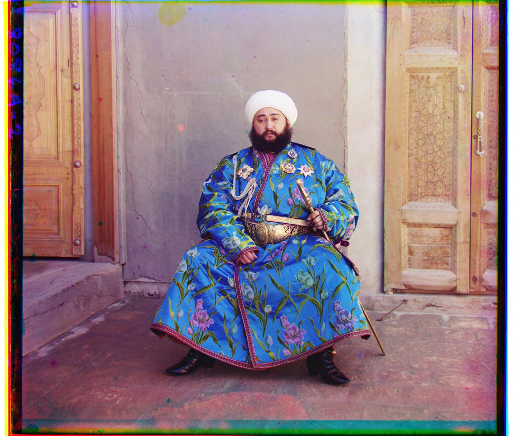
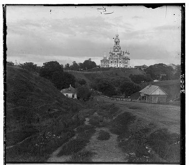
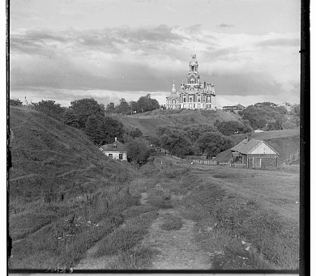
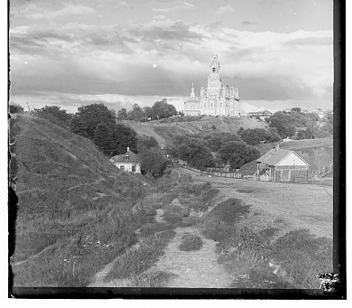
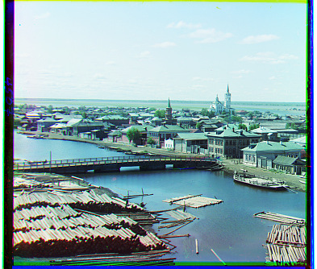
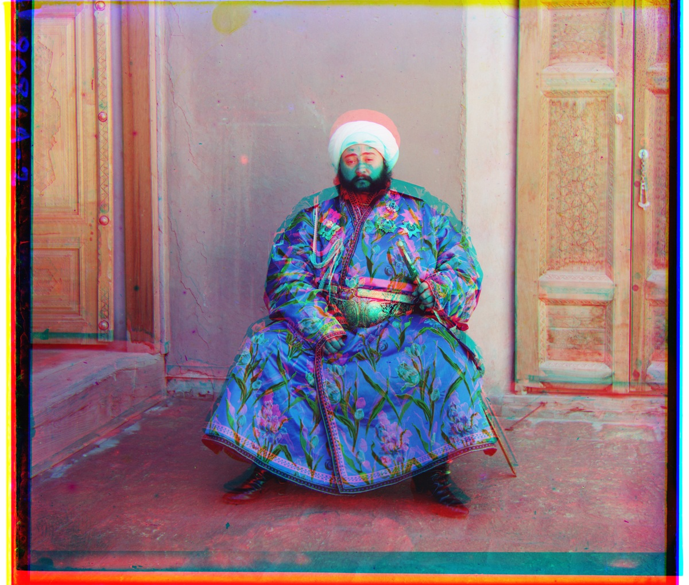

UC BERKELEY · CS180 · FALL 2026
PROJECT / 01
A century
in color.
Images of the Russian Empire
Reconstructing the Prokudin-Gorskii collection, one translated color channel at a time.
Explore the reconstructions ↓
01 / THE RECONSTRUCTION PROBLEM
Three exposures.
One photograph.
The original scan contains three grayscale exposures stacked vertically: blue, green, then red. Each exposure records light through a different filter. A direct RGB stack introduces colored double edges because the camera or subjects moved between exposures.
The pipeline fixes the blue channel and estimates an integer translation for green and red. After alignment, the channels are stacked in R, G, B order. No trained model or prebuilt registration function is used.
JPG inputs are uint8; the TIFF inputs are uint16. img_as_float32 converts both correctly to [0, 1]. The height is divided by three, discarding at most two trailing rows.



Actual channels from cathedral.jpg. Each individual channel is grayscale.
02 / SINGLE-SCALE ALIGNMENT
Search small. Compare carefully.
For each moving channel, enumerate all 961 integer offsets in [-15, 15] × [-15, 15]. At each candidate, compare matching interior pixels with normalized cross-correlation (NCC), then retain the maximum score.
NCC removes the mean and normalizes magnitude, making it less sensitive to affine brightness changes than raw squared differences. The implementation also supports L2; all measured baseline results in this report use NCC. Constant patches receive a finite fallback score.
Discard an 18% margin for scoring, enlarged when necessary to keep every candidate valid. All candidates within a search use the same reference rectangle. Array slices sample the moving image without circular wraparound. Pixel calculations are vectorized; only candidate shifts are looped over.

Cathedral
G (2, 5) · R (3, 12)
0.261 s alignment

Monastery
G (2, -3) · R (2, 3)
0.393 s alignment

Tobolsk
G (3, 3) · R (3, 7)
0.271 s alignment
All three JPEGs were processed at their original resolution. Their single-scale and pyramid-NCC offsets agree exactly. The results have coherent architectural edges; the original colored plate borders remain visible.
03 / MULTI-SCALE ALIGNMENT
Start coarse.
Refine to the pixel.
A large TIFF channel contains millions of pixels and may require hundreds of pixels of translation. Enlarging the exhaustive search window at full resolution is wasteful.
- Build the pyramid explicitly: Gaussian smoothing with σ = 1, then sample every second pixel.
- Stop when the shorter dimension is at most 256 pixels.
- At the coarsest level, search ±15 pixels.
- Double the estimated displacement on the next finer level.
- Search ±3 pixels around that prediction, continuing to the full-size image.
No high-level Gaussian/Laplacian pyramid or automatic alignment routine is called. The same parameters are used for every image.
Actual trace: Melons, red → blue
| Level | Shape (H × W) | R shift (x, y) |
|---|---|---|
| 4 | 203 × 236 | (1, 11) |
| 3 | 406 × 472 | (2, 22) |
| 2 | 811 × 943 | (4, 45) |
| 1 | 1621 × 1885 | (7, 89) |
| 0 | 3241 × 3770 | (14, 178) |
Level 0 is the original channel. The large displacement is recovered incrementally rather than through a huge full-resolution window.
The final output is cropped only to the common valid rectangle of B, shifted G and shifted R. This removes invalid translation strips, not the historical plate border. It is not claimed as automatic border detection.
04 / PROVIDED IMAGES · 1 OF 4
Pixel-NCC results.
Original-pixel, coarse-to-fine NCC baseline. Click an image to enlarge it; the separate gradient link opens the optional extension result.
Cathedral
Pixel NCCG (2, 5) · R (3, 12)
0.11 s alignment · 341 × 390 input channel
View gradient-NCC result ↗Church
Pixel NCCG (4, 25) · R (-4, 58)
2.67 s alignment · 3202 × 3634 input channel
View gradient-NCC result ↗Emir
Baseline failureG (24, 49) · R (48, 44)
2.72 s alignment · 3209 × 3702 input channel
View gradient-NCC result ↗Harvesters
Pixel NCCG (17, 59) · R (14, 124)
2.71 s alignment · 3218 × 3683 input channel
View gradient-NCC result ↗Emir is the clear global baseline failure: different filter responses in the blue robe mislead raw-pixel matching. Its corrected gradient result is analyzed in Section 06.
04 / PROVIDED IMAGES · 2 OF 4
Pixel-NCC results.
Original-pixel, coarse-to-fine NCC baseline. Click an image to enlarge it; the separate gradient link opens the optional extension result.
Icon
Pixel NCCG (17, 41) · R (23, 89)
2.76 s alignment · 3244 × 3741 input channel
View gradient-NCC result ↗Ilemselga
Pixel NCCG (7, 40) · R (11, 131)
3.27 s alignment · 3270 × 3800 input channel
View gradient-NCC result ↗Melons
Pixel NCCG (10, 81) · R (14, 178)
3.01 s alignment · 3241 × 3770 input channel
View gradient-NCC result ↗Monastery
Pixel NCCG (2, -3) · R (2, 3)
0.17 s alignment · 341 × 391 input channel
View gradient-NCC result ↗04 / PROVIDED IMAGES · 3 OF 4
Pixel-NCC results.
Original-pixel, coarse-to-fine NCC baseline. Click an image to enlarge it; the separate gradient link opens the optional extension result.
Religious Painting
Pixel NCCG (3, 29) · R (7, 69)
2.74 s alignment · 3193 × 3742 input channel
View gradient-NCC result ↗Self Portrait
Pixel NCCG (29, 78) · R (37, 176)
2.88 s alignment · 3251 × 3810 input channel
View gradient-NCC result ↗Siren
Pixel NCCG (-6, 49) · R (-24, 96)
3.21 s alignment · 3250 × 3817 input channel
View gradient-NCC result ↗Three Generations
Pixel NCCG (14, 52) · R (12, 111)
2.73 s alignment · 3209 × 3714 input channel
View gradient-NCC result ↗04 / PROVIDED IMAGES · 4 OF 4
Pixel-NCC results.
Original-pixel, coarse-to-fine NCC baseline. Click an image to enlarge it; the separate gradient link opens the optional extension result.
Tobolsk
Pixel NCCG (3, 3) · R (3, 7)
0.11 s alignment · 341 × 396 input channel
View gradient-NCC result ↗Wharf
Pixel NCCG (-7, 15) · R (-16, 82)
2.85 s alignment · 3244 × 3761 input channel
View gradient-NCC result ↗05 / THREE ADDITIONAL GLASS NEGATIVES
Beyond the provided set.
Three additional full-size, 16-bit glass-negative scans were selected from the Library of Congress. Each source is the digital file from glass neg., not the already colorized composite. The same pixel-NCC pyramid and fixed parameters were applied without per-image tuning.
V Malorossii
G (-6, 21)
R (-9, 235)
2.87 s · 9743 × 3770 scan
LOC 2018679028 ↗Suna River
G (-5, 25)
R (-11, 102)
2.85 s · 9763 × 3770 scan
LOC 2018679170 ↗Yasnaya Polyana
G (-2, 42)
R (9, 97)
2.86 s · 9734 × 3809 scan
LOC 2018679023 ↗The selected scenes have coherent global alignment. Yasnaya Polyana retains a strong color cast, which is a photometric limitation rather than evidence that all three channels are geometrically misregistered. Water and fine foliage may still differ between exposures.
Original source titles, full-resolution download URLs, byte counts, SHA-256 hashes and rights advisories are recorded in sources.json. The historical catalog title “V Malorossii” is retained as a source label.
06 / BELLS & WHISTLES · BETTER FEATURES
When brightness
is the wrong clue.
Emir’s robe responds very differently to the red and blue filters. NCC compensates for a global affine brightness change, but not for these spatially varying, color-dependent changes. The pixel baseline selects R = (48, 44), producing a clearly doubled face and misregistered clothing.
The extension aligns gradient magnitudes rather than raw brightness. At each pyramid level, smooth with σ = 1, calculate horizontal and vertical central differences, form √(gx² + gy²), and use the same NCC search. Geometry such as the turban and doorway supplies stronger matching evidence.

G (24, 49) · R (48, 44)
2.72 s
G (23, 49) · R (40, 107)
4.08 s
Both comparison panels use the same B-reference rectangle. Gradient features were also run on all 17 plates with the same parameters. Their full offset table follows; the original-pixel baseline is retained above.
07 / REPRODUCIBLE MEASUREMENTS
Every offset, recorded.
All values are in original-resolution pixels, reported as (x, y). Times measure alignment of both G and R, including pyramid construction. Total pipeline times additionally include image loading, composition and JPG writes.
| Image | Pixel G | Pixel R | Time (s) | Gradient G | Gradient R |
|---|---|---|---|---|---|
| Cathedral | (2, 5) | (3, 12) | 0.110 | (2, 5) | (3, 12) |
| Church | (4, 25) | (-4, 58) | 2.668 | (4, 25) | (-4, 58) |
| Emir * | (24, 49) | (48, 44) | 2.723 | (23, 49) | (40, 107) |
| Harvesters | (17, 59) | (14, 124) | 2.707 | (17, 60) | (14, 123) |
| Icon | (17, 41) | (23, 89) | 2.762 | (17, 42) | (23, 90) |
| Ilemselga | (7, 40) | (11, 131) | 3.275 | (7, 40) | (11, 131) |
| Melons | (10, 81) | (14, 178) | 3.007 | (10, 80) | (13, 177) |
| Monastery | (2, -3) | (2, 3) | 0.170 | (2, -3) | (2, 3) |
| Religious Painting | (3, 29) | (7, 69) | 2.736 | (2, 30) | (7, 70) |
| Self Portrait | (29, 78) | (37, 176) | 2.882 | (30, 79) | (37, 176) |
| Siren | (-6, 49) | (-24, 96) | 3.210 | (-6, 49) | (-24, 96) |
| Three Generations | (14, 52) | (12, 111) | 2.726 | (13, 53) | (9, 111) |
| Tobolsk | (3, 3) | (3, 7) | 0.108 | (3, 3) | (3, 7) |
| Wharf | (-7, 15) | (-16, 82) | 2.851 | (-6, 15) | (-16, 82) |
| V Malorossii | (-6, 21) | (-9, 235) | 2.874 | (-6, 21) | (-9, 235) |
| Suna River | (-5, 25) | (-11, 102) | 2.846 | (-5, 25) | (-12, 102) |
| Yasnaya Polyana | (-2, 42) | (9, 97) | 2.859 | (-2, 42) | (9, 97) |
* Emir is the known global raw-pixel baseline failure. Fine motion artifacts in people, vegetation and water are separate from global translation errors.
Runtime
Median pixel-NCC pyramid alignment: 2.762 s. Maximum total image-pipeline time across all 37 runs: 5.419 s. These are measured sequential CPU wall-clock times on the development Windows machine, not guaranteed runtimes on other hardware.
Download the measurements
The CSV includes all 3 single-scale baselines, 17 pyramid baselines and 17 gradient experiments. The local delivery additionally contains JSON traces and native-resolution outputs.
08 / OBSERVATIONS & LIMITATIONS
Alignment is not
complete restoration.
What worked
All three JPEGs align consistently with both search strategies. Visual inspection of the 17 pyramid pixel-NCC results identifies one clear global failure, Emir; the other 16 have coherent scene geometry. Gradient features substantially correct Emir without tuning its search parameters.
What remains
Integer translation cannot correct subject motion, perspective changes, slight rotations or scale changes. People in Harvesters and Three Generations, moving foliage and water may retain local color fringes. Scratches, emulsion defects and colored plate borders remain. White balance and contrast restoration were not applied.
Implementation checks
- Known synthetic translations recover the correct inverse shift.
- NCC remains correct after a brightness scale and offset.
- A large synthetic shift tests coarse-to-fine scaling.
- Constant patches produce finite scores.
- Common-rectangle composition introduces no wraparound pixels.
- All 17 original scans decode successfully.
No ground-truth shifts were supplied. Visual assessment is not a claim of zero error at every pixel.
Sources & attribution
- UC Berkeley CS180 Project 1, Fall 2026 — assignment and 14 provided scans.
- Library of Congress, Prokudin-Gorskii collection — historical photography by Sergei Mikhailovich Prokudin-Gorskii.
- Yasnaya Polyana — LOC 2018679023; original three-exposure glass negative, TIFF source.
- V Malorossii — LOC 2018679028; original three-exposure glass negative, TIFF source.
- Suna River — LOC 2018679170; original three-exposure glass negative, TIFF source.
Implementation: Python, NumPy, SciPy and scikit-image; image files encoded with Pillow. Alignment search, pyramid orchestration and finite-difference feature construction are implemented explicitly. The code and report were prepared with Codex assistance; all offsets and timings come from executing the delivered pipeline.